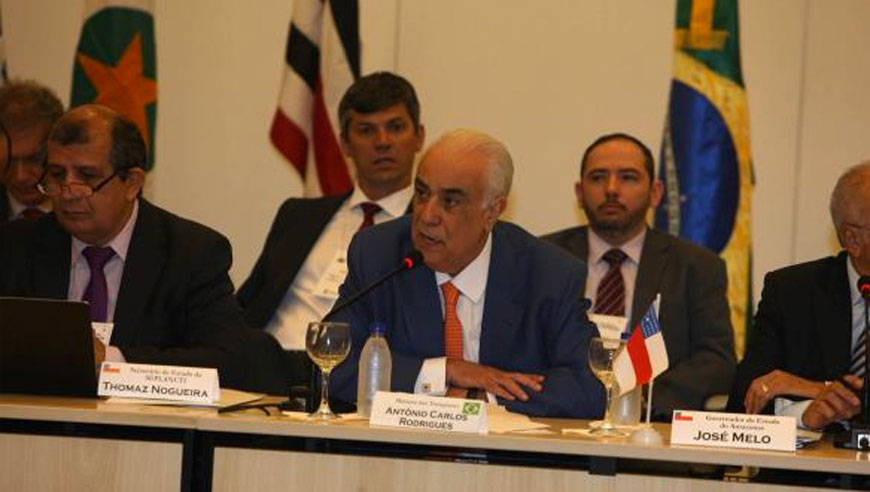

Notícias
Ministro dos Transportes reafirma cessão de trecho da BR-316 ao Estado
O ministro dos Transportes, Antonio Carlos Rodrigues, reafirmou nesta sexta-feira, 24, ao governador Simão Jatene que o trecho da rodovia BR-316, entre Marituba e Belém, será cedido ao governo do Estado. "Nós estamos com problemas caseiros, mas vamos resolver. Já estamos finalizando esse processo", afirmou o ministro, após ser indagado pelo governador paraense. A confirmação foi feita durante os debates do 11º Fórum dos Governadores da Amazônia Legal, que está sendo realizado em Manaus, durante todo o dia.
Durante os debates, que envolvem financiamento público da saúde, soluções de logística e outros temas de interesse dos Estados que compõem o bloco amazônico, o governador Simão Jatene aproveitou a oportunidade para questionar sobre a cessão, que foi anunciada em junho deste ano e seria efetivada até o dia 13 de julho.
Com a concessão pela União, o trecho de 16 quilômetros que vai do Entroncamento até Marituba, quase na entrada de Benfica, além da Alça Viária, passará a ser administrado pelo governo do Estado, que executará obras para melhorar o fluxo do tráfego no perímetro.
Na audiência em junho, Simão Jatene expôs ao ministro a necessidade da estadualização do trecho para que o governo possa realizar obras que ajudem a desafogar o trânsito na região. Entre as obras anunciadas estão a completa reconstrução das pistas, com três vias em cada sentido, a implantação de ciclovias e a utilização do canteiro central para as obras de expansão do sistema de transporte urbano. Esses trabalhos fazem parte do programa "Ação Metrópole", criado para melhorar a acessibilidade urbana e buscar solução para o tráfego saturado da rodovia BR-316, da avenida Almirante Barroso e de algumas vias do centro de Belém.
O projeto inclui a melhoria no sistema de transporte no trecho entre o Entroncamento e o município de Marituba; a construção de alternativas viárias à rodovia BR-316, como o prolongamento das avenidas João Paulo II e Independência; e a adequação de vias que integram a rede de transporte coletivo.
Após o anúncio da cessão, circularam boatos de que seria cobrado pedágio no perímetro. A informação, todavia, não procede, como assegurou o diretor do Núcleo de Gerenciamento de Transporte Metropolitano (NGTM), Cesar Meira, em entrevista para diversos veículos de comunicação da capital.
"Não será cobrado pedágio. O que vai ocorrer é a maior intervenção que a BR-316 já recebeu até agora", asseverou. "O governo será responsável pela manutenção da via, e o governo federal pela fiscalização", informou. "O momento para assumir a BR é oportuno" reforçou o diretor, pois o governo lançará a licitação do BRT Metropolitano, projeto que compreende exatamente o trecho que passará à gestão estadual.
Encerrados os trâmites licitatórios, o governo do Estado começará os trabalhos na rodovia. As obras receberão recursos da Agência de Cooperação Internacional do Japão (Jica), com contrapartida do Estado.
Entre os serviços a serem executados está a drenagem, que hoje, segundo Cesar Meira, "praticamente inexiste". A rodovia também vai ganhar nova iluminação, toda em LED, e ciclovias nas extremidades, além de bicicletário e passarelas. Serão três pistas de ida e vinda, uma delas exclusiva para o BRT, no canteiro central. "Essa é uma nova realidade que se desenha para a Região Metropolitana de Belém", resumiu o diretor do NGTM.
"Entendemos a angústia da população. Obras de mobilidade de urbana são demoradas e causam transtorno, mas agora o governo do Estado está encarando a questão de frente e investindo perto de R$ 1 bilhão nessa área", informou Cesar Meira.
Governo do Estado do Pará
Secretaria de Estado de Comunicação
COMPARTILHE